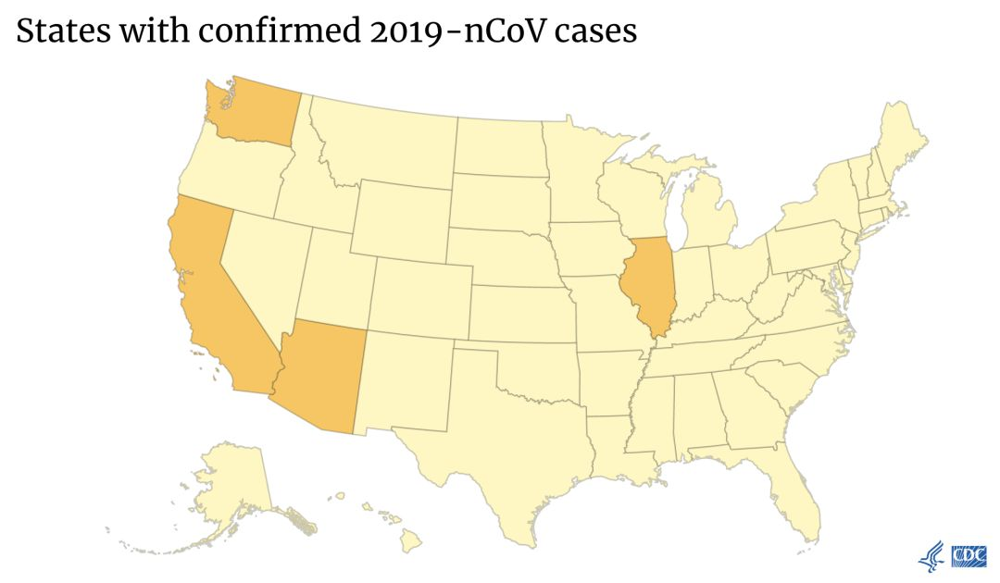

有谁想去武汉？我们7个摄影记者全部报了名|武汉一线摄影师专访
原文链接 备份链接 这里是大学生的新媒体实验室 ∆ 再坚持几天，快了…… 轮到你了按： 这是摄影师蔡颖莉隔离在家的第8天。8天前，她与所供职的财新网7位记者抵达武汉新型冠状病毒疫情现场采访。在经历了14小时的一线拍摄后，被迫在武汉封城前撤 …


十七年前的非典，我作为疫区之一的广东人，在疫区之二的北京上大学。当时，我在同系师兄的呼吁下，写了一个月的非典日记。
我和先生、五岁的儿子现在住在美国南部，先生一家是武汉人，我每次回国都会去武汉，去年夏天，我家小朋友在武汉住了一个多月。幸运的是，爷爷奶奶今年十一月下旬来美国探亲，住在我们这里。1月21日，我翻阅了当年的非典日记，回家碰到我先生和他堂哥打电话——堂哥从上海回武汉过年，刚刚到家。刚重温非典记忆的我，焦虑道出当年北京封锁重演的可能。我先生以此劝说堂哥回上海。
22日一早，堂哥一家三口开车回上海，伯父伯母认为小题大做，拒绝同行。23日，武汉“封城”。
“肺炎”日记，十七年后，我想再写一次。
文 | 顾言
编辑 | 依蔓
📍
这是一个生活在美国南部的作者
所带来的疫情观察每日书
“老师，你不要去武汉，
不要去中国，也不要去日本”
2020年1月22日，星期三，天气晴朗，阳光明媚，空气清冽。
我停在车队里，从后视镜里看到老师把小正从教室外的等候区领出来，便按下了后座车门启动的按钮。然而一回头，小正并没有随老师一起。小正的老师将满头卷发的脑袋探入后座车门，压低嗓音跟我说：“小正看起来非常非常的担忧中国病毒的事情，他今天一整天都在说这个事情，而且他看起来知道很多的细节，一直都在想这个事情。”
“噢，可能是我们在家一直在谈论这件事情！”我回忆了一下。
的确，这几天来，尤其是1月20日钟南山院士说出了14名医疗人员感染、确认了病毒人传人的风险之后，武汉爆发肺炎的事情，成为我们饭桌上唯一的话题——爷爷奶奶回馈他们朋友圈中的信息，有时还会现场发个微信去问候一下某个朋友；我分享我朋友圈中和美国华人论坛和英文新闻里面的消息，以及当年非典体验过的种种管理措施；我先生或者批评一下爷爷奶奶那边信息的科学性，或者提醒他们要去劝某个出外旅游探亲的朋友不要着急回家，或者跟我谈论一下此次病毒的问题和对制度的反思。小正有时也会插话，要求我们解释一些他没听明白的名词。
小正上车后，我问他今天是不是在学校说了很多关于肺炎病毒的事情。小正说：“是的，我跟Betsy（老师的名字）说，你不要去武汉，不要去中国，也不要去日本。”
“为什么这么说呢？”
“因为我很担心，她去了中国，会被传染。”
“那为什么不能去日本呢？”
“因为日本也已经有一例了呀，”小正很认真地回答，“我担心她不知道，所以要告诉她。”
“你关心老师，告诉她这些事情是很好的。但是其实你不用这么担心，我们很多科学家和医务人员都在付出很多努力做研究，你看现在已经很快发明了可以确认这种病毒的试剂了，” 我尝试用他能理解的话解释，“就好像流感一样，那也是一种病毒。我们科学家付出很多努力去研究它，就找到解决的方法。你去年是不是打了流感疫苗？打了疫苗之后，我们就不怕流感病毒了。现在其实流感病毒也很多，但我们都不用害怕。武汉的这个病毒也一样，我们要相信很快科学家们就可以找到办法的。”
“我还是很担心呀，”小正自言自语地喃喃说，“我就是一个‘担心人’。”
我也是很担心。
我担心，因为小正所在中文学校马上要举行春节汇演，到时挤坐在小小礼堂里面的学生家长里，谁知道会不会有刚从武汉过来的病毒携带者。
1月21日，美国疾控中心宣布在华盛顿州确诊第一例新型冠状肺炎，患者在武汉旅游后回美。同时，中心将中国旅游警告等级提高到了二级（Alert - Level 2, Practice Enhanced Precautions）：提醒——加强预防措施。
我们所在的美国东南部也许很快也会有确诊病例。
留学生就是“瘤”学生？
1月24日，我在一个华人微信群里破天荒地发言了——在这类没有认识的人的微信群里面，我都是以看信息为主，从未参与任何讨论。
然而当天美国伊利诺伊州确诊了美国第二例新型冠状肺炎（患者也是一月中旬从武汉回美）后，有人在微信群里转发了新闻，并用中文评论：“美国芝加哥确诊了第二例，也是武汉来的，应该就是芝加哥大学的留学生。”很快下面有人紧接着评论：“留学生还真是瘤学生，带病毒的……留学生多数1月15号左右回来，那时候疫情已经爆发，只是瞒报……”
我忍不住回应了第一个人：“在您自己发的新闻链接里面说了，确诊的患者 in her 60s。美国确诊的两例，全无一名是留学生。
前几天，我家华人邻居的章爷爷跟我家的爷爷奶奶说，他最近身体无力酸痛，在家躺了几天。过了一会他又问，你家媳妇前一阵回国（我在1月14日的时候从广东经香港回到美国），不会是从武汉来的吧？——他知道我们爷爷奶奶是武汉人，常居武汉，我们每次回国也都基本会去武汉。
12月的时候，香港对武汉新出现的病毒非常警觉，媒体将其称为“武汉肺炎”，我和同事们都很担忧，认为这样的标签非常糟糕，只会加剧彼此的不信任感，对防控毫无帮助。很快，这个称呼就停用了，不过防控措施却没有放松。1月中旬我乘坐高铁抵达香港西九龙站，除了红外线测体温外，广播一直播放着解释武汉新出现病毒和武汉来的乘客要单独检查等告示。
1月下旬，随着信息的披露，我先生看着网上那些对疫情掉以轻心的武汉人聚会图片，愤怒地指责：武汉人就是这样子，我从小看到大，一点都没变过，拿愚蠢当洒脱。我总是激烈地替武汉人辩解——虽然我是广东人，而他才是地道的武汉人。这样的标签化是不公平的，甚至是危险的，只会让我们忽视了真正的原因，而将一切归咎于一小部分人的“落后行为”——他们并不是“落后”，他们，只是还不知道。
十七年前，在非典封校中，我写下了这么一则日记。
2003年5月22日
今天经过人大西门的顺丰酒店，看到它恢复营业了【当年北京在疫情中，所有餐饮业停业】，但是门口立着一块牌上书：传染疾病者不得入内。
忽然想非典会不会造成又一种歧视——其实已经有了：好象北京的在外地就开始有点郁闷了；而我，在非典刚来的时候，就不得不面对网上经常对广东人的责难，说非典是他们乱吃带来的虽然并没有一个权威的证明【后来有权威的证明说明确实是吃野味带来的，遗憾的是，广东吃野味的人未见显著减少，这次武汉人也被这样指责了。十七年，没有制度来限制大家吃野味，难道大家希望靠地域性饮食文化的自我改变来约束吗？】
可是当我们面前是一个全体的灾难时，这种责难又有什么用呢？但是在当时，这种话我确实是不好意思出口的，因为我就是一个广东来的，别人听着都有点偏袒的意味。可是现在的外国对中国的态度【在当时3天前的日记，我记录道：“晚上米给我看了一张网上的图，是《时代》的封面，一面五星红旗上有肺部阴影，下书：SARS NATION”】，和当初外地对广东的态度，并无太大的区别。在他们看来，中国人不爱干净落后，所以这里会成为非典的源头；而那时（国内人）对广东的看法，心态并没有什么大的区别。
大年三十，准备好的公筷最后没用上
1月25日是大年三十，早上七点多，监视器就传来咚咚咚的声音，小正最近不知道为什么，发明了通过敲击床板表示他睡醒的方法。我起床打开他的房门，探头道“新年好”。
小正笑眯眯地爬起来，听到这句话愣了愣，记起我昨天的吩咐，准确地说了“妈妈新年快乐”。洗漱完之后，穿上他的红唐装，跟爷爷奶奶拜年，拿到了他的红包。
九点二十左右，我计算了一下时间，跟爷爷说，我们现在去中国超市吧，再晚怕人会多起来，太早又怕今天新鲜的鱼还没上——爷爷为今天的大餐准备了快一个星期，炸藕夹，炸丸子，卤牛肉，炖排骨汤，如今只剩今天去买一条新鲜的鱼，晚上好上一条全鱼。
“小正和奶奶就在家里吧。” 我说。小正站起来准备抗议，奶奶也说：“一起去嘛。”——身处美国大农村，我们不带着，爷爷奶奶的活动范围就只有小区内了。
“我们机场昨天拉走了一个疑似，”我说，“一下飞机就带到医院去了。他在飞机上就发现发烧，一直戴着口罩，报告给机场了。”
奶奶立刻拉着小正坐下：“我们来讲故事。”
我递给爷爷一个口罩，爷爷接过去在手里翻来覆去，又往脸上蒙了一下。“反了，”我指点着，“要这样反过来，那个有铁丝的在上面。”爷爷比划了比划，说：“我这辈子就从来没戴过口罩。”
“冬天戴口罩也挺好的，平时防止冷空气刺激鼻子，”我说，“人多时防病毒。”
爷爷把口罩往衣兜里一塞：“到超市再说吧。”
九点五十左右，我们来到中国超市，只有稀稀拉拉不到十个人的感觉，没有口罩，包括售货员。我把脸上的口罩也取了下来。爷爷选了两条活鱼，挑了一根大葱，我拿了三包瓜子，就一起去结账。这时超市里的顾客渐渐多起来了，我看到了两个戴口罩的人，是N95口罩。
我们提着菜走到停车场，爷爷忽然对前面一家子人用武汉话说了什么。那家人应该是外公外婆、妈妈和宝宝一起来买菜，两三岁大的小女孩坐在装得满满当当的推车上。
我仔细去听，大概是爷爷跟他们打招呼：“你们也是武汉人吧？”
那家人都笑眯眯地回过头，老乡见老乡的高兴，在异乡春节的这天碰到老乡，而且都是家乡在疫区的老乡，可能那种高兴，要比平常多了些心心相惜吧。“是撒，” 那个外婆搭话，“你也是武汉人撒，过年了来买菜啊。”
原来是不认识的人，不会武汉话的我没有参与认老乡的能力，就快步走向前去，准备先去开后备箱，让爷爷在后面慢慢走着和老乡聊两句。
聊着，我听到身后的爷爷随口问了句：“你们是什么时候来的？”
“十三号。”那个外婆欢快地回答。
“十二月十三号？”爷爷明显迟疑了下，补问了一句。
“元月十三号撒。”
我没有回头，但也能感觉到身后的空气瞬间凝固。美国确诊的第二例病例，正是在一月十三号进入美国。在一片诡异的静默中，爷爷赶上了我的脚步，一起上了车。
回到家，我收到了堂姐发来的微信：“冒昧问一句，你这次回国没去过武汉吧？”
堂姐一家三口也住在这个小镇上，虽离得不远，但平常也难得见上一面，不过过年总是要在一起吃一顿的，更何况今年我家的爷爷奶奶、也就是她的叔叔叔母正好也在。爷爷早早地准备这么多菜式，多少也有点要让堂姐一家好好感受地道武汉年饭的意思在里面。
我解释了我回国的行程，跟她聊了两句，就放下手机。到了下午三点多，我查看手机，发现堂姐又给我发了留言，叮嘱我们不要去中国超市。我应了好。
过了一会，我不由多想了些，去找了一把新筷子，跟爷爷说：“要不我们晚上用公筷吧？不知道堂姐会不会有点担心，放几把公筷她也许放心一点。”从午饭后就一直在厨房忙活的爷爷有点不高兴：“要不就不来算了，不来也没什么，早点说就是了。用公筷有什么作用？都凑一起吃饭了！”
“可能也没那么夸张啦，”我有点尴尬，“反正放着，要是他们不用就算了，用公筷也挺好的。”我想起来了，我在广东的餐馆吃饭，每个人面前都是摆两双筷子，颜色不同，一双自己吃，一双夹菜用的。是非典之后？禽流感之后？我不知道是哪个节点开始，或许就是这样一场一场的传染病，让大家慢慢地改变了习惯。非典的时候，我在北京看完了加缪的《鼠疫》，书中说，疫病过后，人们得到的是记忆和知识。
天渐渐黑了，堂姐一家还没出现。爷爷和奶奶在厨房来来回回地走，菜都备好，但要等人来了才好下锅，不然怕菜凉了不好吃。走来走去，不禁嘟囔两句“到底还来不来”。我一时觉得自己下午实在多嘴，不该去说公筷的事情，老一辈的人重亲情，说不定是没影的事，我这么一说反而让他们伤心了。
家中人人都一副毫不在意的轻松样子，空气却仿佛稀薄了几分，叫人呼吸困难。我借着出门看信箱，到门外张望了一会，看到一辆小车在拐弯处兜了圈，往我这边开来了。我大喜，连忙进门喊道：“他们来啦。”
厨房里立刻想起了锅碗瓢盆的声响，小正大叫着扑过来喊哥哥喊姑姑姑父，奶奶也笑呵呵地迎了出来。像氧气瓶喷出了大量的气体，充盈了整个房间，呼吸顿时畅快了起来。一片乱糟糟的互道“新年好”中，春节来到了。
爷爷和奶奶一盘盘地菜端上了桌，小正数了又数，直呼好多好多菜。堂姐一家没人注意到搁在菜盘子上的公筷，用自己的筷子直接从盘子中夹起菜塞进口中，爷爷做的地道武汉美食让他们赞美的话说都说不完整。
吃过晚饭，我收拾餐桌，他们聚在一起挨个跟国内的亲戚微信视频拜年。除了在武汉封城前天回到上海、立刻被隔离在家中的堂哥一家之外，散落在湖北各地、包括武汉在内的亲戚们，都乐呵呵地表示生活如常，本来过年家里就屯满了菜，正好都不出门了。我听不太懂武汉话，只觉得他们都不断地互相重复“呦，你胖了嘛”这句话。
奶奶到厨房看我收拾的情况，我将一把没用到的筷子放进保鲜袋封好，跟奶奶说：“我把这个还是收起来了，这个都洗干净了，没用上。”
“好，” 奶奶笑眯眯的，“都没用上。”
2003年4月29日
……在燕南吃晚饭看新闻，什么部发了一个关于高校五一假的指示之类的，说要过一个有意义的防治非典的五一。我都喷饭了，一抬头，周遭的同学都是差不多的表情。回家的路上微笑了一路。
1月27日，美国疾控中心关于新型冠状病毒的网页首页，多了两幅地图，一张是美国地图，标识着发现了确诊病例的州，一张是世界地图，标识着发现了确诊病例的国家。


微信里转载着总理李克强在武汉视察的图片和视频，丁香医生的疫情播报显示，1月27日晚上8点59分的全国确诊病例是2844。而篮球明星科比坠机死亡的消息，在朋友圈中刷屏。
波士顿的口罩短缺了
1月28日，我开着车，从广播听到新闻说：因为人们担心新冠肺炎的传播，纷纷到药店购买口罩保护自己，波士顿地区的口罩出现短缺。波士顿口罩的短缺，当地人购买只是其中一个原因，估计更多是被华人组织购买了去，为了支援武汉的医护人员吧。
1月30日早上起来就看到两个消息，一个是武汉协和医院告急，说物资不是紧缺，而是告罄；另一个消息是武汉红十字会的各种无作为、神操作和辩解，以及武汉慈善总会的扣着捐款没发放。
十七年前的非典，我也记录了一段捐款的事情：
2003年5月3日
时间过得好快，事情却都好象还没怎么做，论文还差两篇老是动不了笔，英语几乎没碰过。虽然那本书还在读。做完了微分作业就基本把经济学的扔到一边了。
北京的非典还是每天一百多例地新增，但似乎已经没什么感觉。晚上暖来收给医务人员的捐款，觉得这种事有点做作。当年抗洪不见大张旗鼓给解放军捐款。大家捐的都不多，三五块的样子。
2003年5月26日
最后一天的日记，竟然很巧合的，早上牛军老师说，从今天开始恢复正常上课了……下午Sparkman上课，又要我们谈非典，要有一个thesis。于是就发现自己的日记，记了好多关于非典，却找不出一个主题来。暖提了几件非典中的事情，尤其说到我捐钱的态度，算是婉转地批评吧。
我忘记我那时候对暖的批评是否有过辩解，也许从小听过太多父母对这类官方捐款的抱怨，我自来都是极为谨慎的态度。当年的不捐款，不是因为觉得医护人员不好，而是觉得不应该通过民间捐款的方式，这是他们的工作，应该得到相应的工作报酬，而不是慈善捐款。而民间捐款，也不应该通过这种官方的渠道。
08年汶川地震，我在新加坡。当时我靠着奖学金维持生活。但是我找不到一个可以避开官方的渠道，最后我捐到了新加坡红十字会。我至今还记得，我站在ATM前转账的凄凉心情，为我身为一个中国人却要将钱放到另一个国家的组织手中才放心。但我还是捐了，我捐出了当月奖学金的四分之一。
30日下午，我去参加我们中文学校对口武汉同济医院捐助医疗用具的一些表格填写工作。尽管花了很多功夫，找了很多私人关系，最终要是需要在受赠人那里，填上湖北CiShan总会的名字。捐钱之前我比较了许多组织，最后还是确定跟中文学校一起，有直接的内部人员私人关系的对接，而不是汇总到某个大渠道里面。虽然受赠人还是逃不过这样的名字，但我还是愿意为这个事情，花一点钱，花一点时间。
十七年过去，我的内心还是一样的悲观，但我的行为更加乐观。我的成熟是以更加妥协的形式来达成，在更努力去相信彼岸之光的同时。我还是要去信仰，做我能做的，哪怕永不能实现。
这一天，中国确诊人数超过了8000，西藏出现了病例，全国沦陷。我的家乡潮州还在苦苦支撑着，上了人民日报的报道（注：但今天2月1日潮州确诊3个输入性病例）。民宿经营者群体一片惨淡，有人称损失了30万不止，兼职经营民宿、正职是交通局公职人员的一名老板，在朋友圈发出了他在高速路口加班检查过往车辆的照片。
WHO终于发表了公告，宣布新冠肺炎构成“国际关注的突发公共卫生事件”（PHEIC）。特朗普政府开会讨论。美国确诊了第6例，是第2例病患的丈夫，证实了人传人的危险。
理科男的舌战群儒
1月30日晚上，美国国务院发布第四等级的旅游警告——不要去中国。第四等级是美国国务院能够发布的关于旅游的最高等级警告，1月11日美国国务院发布了同样等级的旅游警告，对象国是伊拉克，在美军驻伊拉克基地遭袭击之后。

图片来自网络
我们中文学校和纽约华人医生协会合作的那批捐赠，昨天终于还是没能赶上原订的飞机，临时又换了一家代运。在高压下工作做繁琐的填表工作，群里的人都绷着神经，稍有沟通不畅就都口气不好起来，大家心里都怕晚一步渠道就被封锁了。本来是打算购置口罩、防护服、手套、护目镜，口罩被砍单，防护服和手套还没找到货源，在焦虑中，组织者最后决定有什么先寄什么，所以这次寄出去的是一批护目镜，有从厂家直接购买的，也有从代理商零售买的，连同运费大约两万美金。
昨天，我看到了一系列物资的报道，有自愿隔离的货运司机，有饭圈女孩的努力，医院采购人员的抢货，还有红十字会无力的辩解。我不知道我们这批护目镜，进入武汉之后，能不能顺利到达组织者的老同学——武汉同济医院医生的手上。做能做的，相信希望。
昨夜我做了KY提供的疫情心理测试，整体状态良好，然而在抑郁度方面有了分数，建议我少看负面消息。
我想起1月27日的一个小事情，来自我的先生。
我先生是一个典型的理科生，一本正经，讲求逻辑严密。1月27日那天傍晚，他下班回来，坐在饭桌边，分享了他和同事午饭闲聊的话题。下面是他的分享：
“今天果然大家都聊起武汉这个事情。有人就说，你们中国人总是喜欢吃奇怪的东西，才有了这个病。我说，我自己是没吃过什么奇怪的东西，我吃过的最奇怪的东西也就是蛇了。他们就说，蛇已经很奇怪了。
我说，但在我看来，法国人吃蜗牛也很奇怪，跟吃蛇比起来，我觉得蜗牛更奇怪吧。他们又说，是你们中国政府管理不好，才会让这个病传播到这么严重。我说，这病不是跟流感一样嘛，流感也是传播很快，只是这个病现在还没研究清楚而已。他们就说，这怎么会跟流感一样呢。我说，你没听说过西班牙流感吗？
结果还真的有人说没有。
我说：就是1918年最早在美国出现，席卷全球，死了1亿人，令第一次世界大战提前结束的那场流感。然后，他们就都不说话了。”
说完，他脸上浮出了抑制不住的自得微笑，补充道，“我早就料到他们今天肯定会拿这个肺炎说事，提早做了功课，上网查了资料，想好用英文要怎么说。”
我一边身为中国人为他的反击感到高兴，一边身为妻子为他的反击感到忧虑：“所以，他们又要想，跟你这个中国人一起，都不能好好愉快地聊天了。”
先生和我分享这件事的那天傍晚，美国疾控中心将全中国都标示为第三等级，这是它所能表示的最高级别的旅游警告：避免非必要前往。
三天后，美国国务院颁布了它最高级别的旅游警告——第四等级，不得前往中国。
四天后，美国总统特朗普下令，凡是14天内去过中国的外国人不得进入美国。

给作者赞赏
原文链接 备份链接 这里是大学生的新媒体实验室 ∆ 再坚持几天，快了…… 轮到你了按： 这是摄影师蔡颖莉隔离在家的第8天。8天前，她与所供职的财新网7位记者抵达武汉新型冠状病毒疫情现场采访。在经历了14小时的一线拍摄后，被迫在武汉封城前撤 …
原文链接 备份链接 点击上方物质生活参考加星标！ 物质生活参考 作者：彭梁洁 来源：物质生活参考（ID：wzshck） 01. 襄阳，距离武汉300多公里，湖北省GDP第二大城市，自古被称为“兵家必争之地”，是《射雕英雄传》里郭靖黄蓉夫妇 …
原文链接 备份链接 各方资源和关注的焦点是武汉，但在周边16座也因疫情而被封闭的城市里，他们正在经历着什么 文 |《财经》记者 房宫一柳 宋玮 黎诗韵 管艺雯 陈晶 余洋洋 实习生 马可欣 张凡 编辑 | 宋玮 1月24日，农历鼠年除夕 …
原文链接 备份链接 国内外的口罩都在送往武汉，可武汉医院的不仅缺口罩，甚至即将用完。人民日报在其官微发问：究竟是物资紧缺还是物资分配环节存在问题？ 截止到目前，协和医院收到的物资全部来自企业和个人捐赠。物资直接对接到各地疫情指挥部或是各 …
原文链接 备份链接 摄影记者 | 蔡小川 “女士们先生们，列车已经到达武汉站，请您按照先后顺序下车……” 广播响起来的时候，车厢里的气氛陡然升到了最高点。所有人的目光都转向了车窗外夜幕之下黑压压的城市。一个列车员从车厢一头飞奔过来。“前面 …